2008/7/26 リヤショックアブソーバーの交換
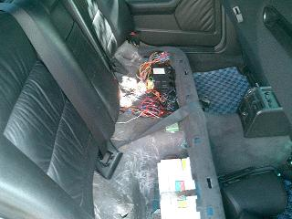 ジャッキアップして、ウマで固定する前にリヤシートを外した。 |
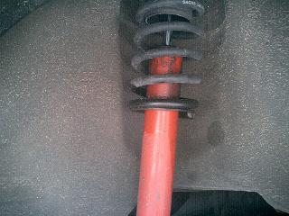 漏れ漏れのアブソーバー 凹凸でタイヤが暴れているのが分かった。。 交換してから8万キロ こんなもんなのか？
|
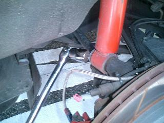 アブソーバー下側のボルト（22mm）を緩めます。 結構なトルクで締まっているので、しっかりした工具を使ったほうがいい
|
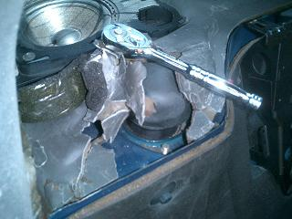 下のボルトを外したら、室内でアッパーマウント部分のナット３個（13mm）を外す。
|
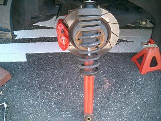 再び外に出てアブソーバーを奥へ叩くと、 車体に入り込んでいるアブソーバーのカラーが抜けて「ゴソッ」とサスが外れる＾＾
|
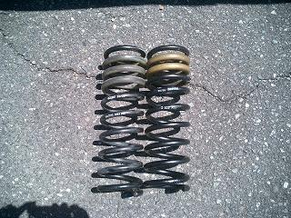 現在の車高がお気に入りなので、コイルは今までの物を使った。 スプリングコンプレッサーを使いコイルを外した。 左が、取り外したザックス製サスキットのコイル（アイバッハ製） 右が、ビルシュタイン製サスキットのコイル（H&R製） この２つのコイル、太さも長さもほとんど変わりはなかった。 手で縮めてみた感じでは、アイバッハ製のほうが固かった。（ヘタリ具合の差かも^^；）
|
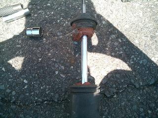 バンプラバーは、２分割されスポンジのようになっていたので。。 Mテクサスペンション用に交換 アッパーマウントにも亀裂がったのでコレも交換した。
|
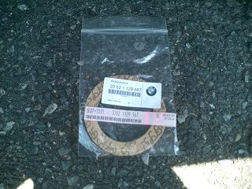 これは、アッパーマウントと車体の間に挟むガスケット 取り外したサスにはついていなかった(--;
|
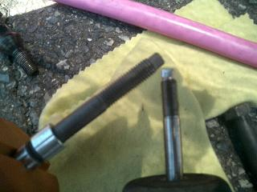 一通り検証して、サスを組上げようとTOPのナットを締めようとしたら・・・ 左が、今回取り付けるビルシュタインのアブソーバー 右が、外したザックスのアブソーバー そう、ネジのピッチが違うのです。。 ビルのアブソーバーにザックスに付いていたナットを取り付けてしまい「締まらないなぁ・・・」と悩み。。 もう少しでディーラーに駆け込んでしまうところだった（恥
|
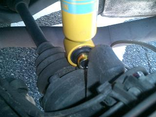 サスが組みあがったので、車体へ取り付けです。 ここでも問題が。。 アッパーマウントが正規の位置にもかかわらず、サスが長すぎて下側のカラーが車体へ嵌らない。 またしばらく悩みました。。
|
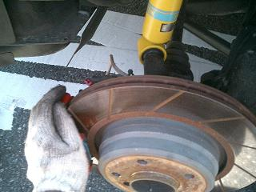 サスが長すぎるのか？ 変な力が働いてアームが上がってきた？ なんて考えるも。。 リヤアームを押し下げればすんなりハマリました（笑
|
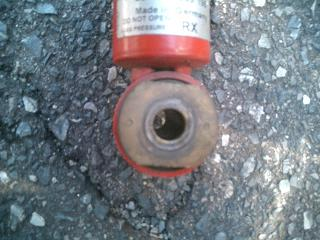 ザックスのアブソーバーには、ブッシュの抜けを防止するワッシャーが装着されていました。 しかし、、ビルにはそれらしき物がなかったので。。
|
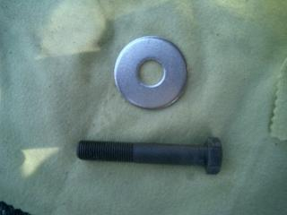 アブソーバーとボルトの頭の間に大きいワッシャーを挟んだ。 ボーベンさんのHPで詳しく書かれています＾＾ |
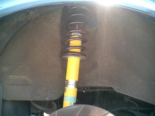 不慣れな作業に加え、一人だったので最初の１本を交換するのに２時間弱もかかってしまった（笑 残りの１本は、要領をつかみ30分もかからず交換できた。 走ってみた感じとしては、低速では「ゴツゴツ」するので、高速だと良い感じかも？ 「ザックスのほうが好き」というのが正直な感想。（乗り慣れているからか？） しかし、カーブでは安定していて粘りがある感じで、コレはコレで良いなぁ。なんて
|
| 戻 る |